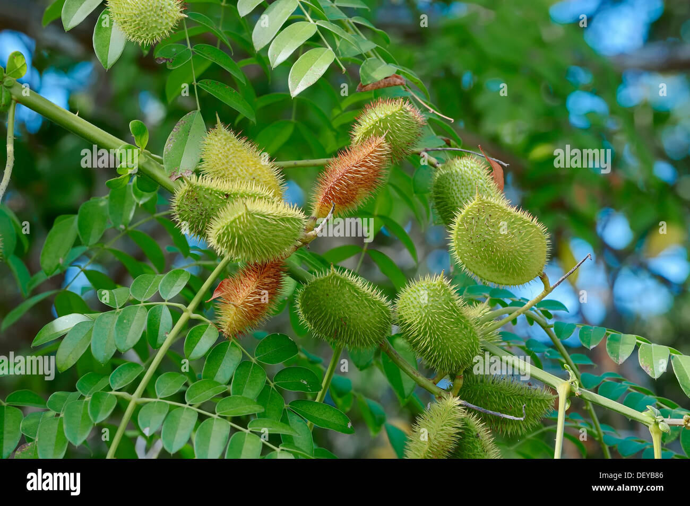

Basonym of Drug
Latakaranja
Main Synonym
- Kuberaksha
- Vitapakaranja
- Kantakikaranaja
- Putikaranja
Regional Name
- Bengali: Kanta Karanja, Nata
- Gujarati: Kankacha, Kangasiyo
- Hindi: Karanjava
- Kannada: Gajjikekai
- Tamil: Kaza Shikkai
- Telugu: Gachakay
- English: Physic Nut, Fever Nut, Bonduc Nut
Botanical Name
Caesalpinia bonducella / Caesalpinia crista Linn
Family
Fabaceae
Classification (Gana)
- Bhavaprakash Nighantu: Guduchyadi Varga
- Kaiyadeva Nighantu: Aushadhi Varga
External Morphology
Large scandent shrub
Useful Parts
Important Phytoconstituent
- Alpha-beta-Caesalpins
- Caesalpin-F
- Aminoacids
- Ethylideneglutamic Acid
Rasa Panchak
- Rasa: Tikta, Kashaya
- Guna: Laghu, Tikshna
- Virya: Ushna
- Vipaka: Katu
Action
Tridoshahara
Therapeutic Indication
- Vranaropana (wound-healing)
- Bhedana (purgative)
- Sothahra (anti-inflammatory)
- Arshoghna (useful in piles)
- Krimighna (anti-helminthic)
- Kusthaghna (useful in skin disorders)
Therapeutic Uses
- Atisara - Seeds kernel with Kanji is given in diarrhea.
- Shoola - Seeds powder with Haritaki, Sauvarchala, and Hingu is beneficial in pain.
- Raktarsha - Root powder with cow urine is given in bleeding piles.
Dose
- Seed Powder: 60-200 mg
- Root Juice: 3 ml
- Bark Powder: 1-3 gm
Formulations
Adverse Effect
Not Known
Remedial Measure
Not required